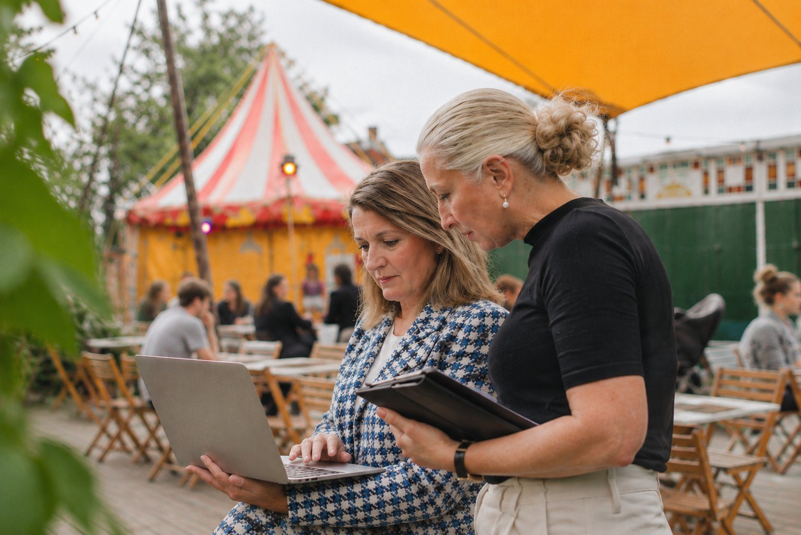

Eventmanagers en
communicatieprofessionals

Een netwerkdag, seminar of jubileum is het visitekaartje van je organisatie. En het moment waarop je je relaties fysiek ontmoet.
Als eventmanager zorg je dat het programma soepel loopt: het dagdeel met sprekers, de omslag naar de borrel en het informele deel daarna.
Wij zorgen dat de audiovisuele ondersteuning het verhaal volgt. Sprekers zijn goed verstaanbaar, en de cocktail hour die erop volgt krijgt licht en muziek die bij het moment passen. Alles afgestemd op de ruimte, ook als dat een kale industriële hal is die we ombouwen tot eventlocatie.
Wat we leveren
Dit kunnen we je bieden
Concept en branding
- Meedenken over concept en sfeerMet 25 jaar ervaring in corporate communicatie
- Je huisstijl in lichtSfeerlicht in je huisstijlkleuren en je logo geprojecteerd op wand of vloer
- Muziek die bij je merk pastEen playlist of dj-set in de toon van je organisatie, en opkomstmuziek voor sprekers
- Boodschap en middelenUitnodigingen, speeches en een aftermovie
Meer over communicatieadvies
Speciale wensen? Laat het weten.
Organisatie en techniek
- Je draaiboek vertaald naar een audiovisuele opzetGeluid, sfeerlicht, microfoons en wat er verder nodig is
- Eén aanspreekpunt voor de AV, ook op de dag zelf
- Een technicus, als je die nodig hebt
- Dj's en bijpassende artiesten
Meer over geluid en atmosfeerlicht

Hoe we samenwerken
Eén aanspreekpunt
We zijn je vaste aanspreekpunt voor licht, geluid en muziek. Waar nodig werken we met professionals uit ons netwerk, om op te schalen of om je in contact te brengen met wie je nodig hebt.
Werkwijze
Zo werken we
Intake
Doel, doorloop, aantal gasten en budget. Hier bepalen we wat het event nodig heeft.
- 1Intake
Doel, doorloop, aantal gasten en budget. Hier bepalen we wat het event nodig heeft. - 2Locatiebezoek of foto's en plattegrond
We bekijken vooraf de ruimte: akoestiek, stroom en opbouwtijden. - 3Voorstel
Een opzet per programmaonderdeel, met een duidelijke prijs. - 4Afstemming
Het draaiboek naast de techniek. Werkt er een technicus van de locatie mee, dan krijgt die vooraf een korte online briefing. - 5Opbouw en soundcheck
Klaar voordat de eerste gast binnenkomt. - 6Op de dag zelf
Eén aanspreekpunt voor alles wat met licht, geluid en muziek te maken heeft.
Werk je aan een netwerkdag, seminar of zakelijke borrel?
Laat je gegevens achter, dan neem ik contact met je op.